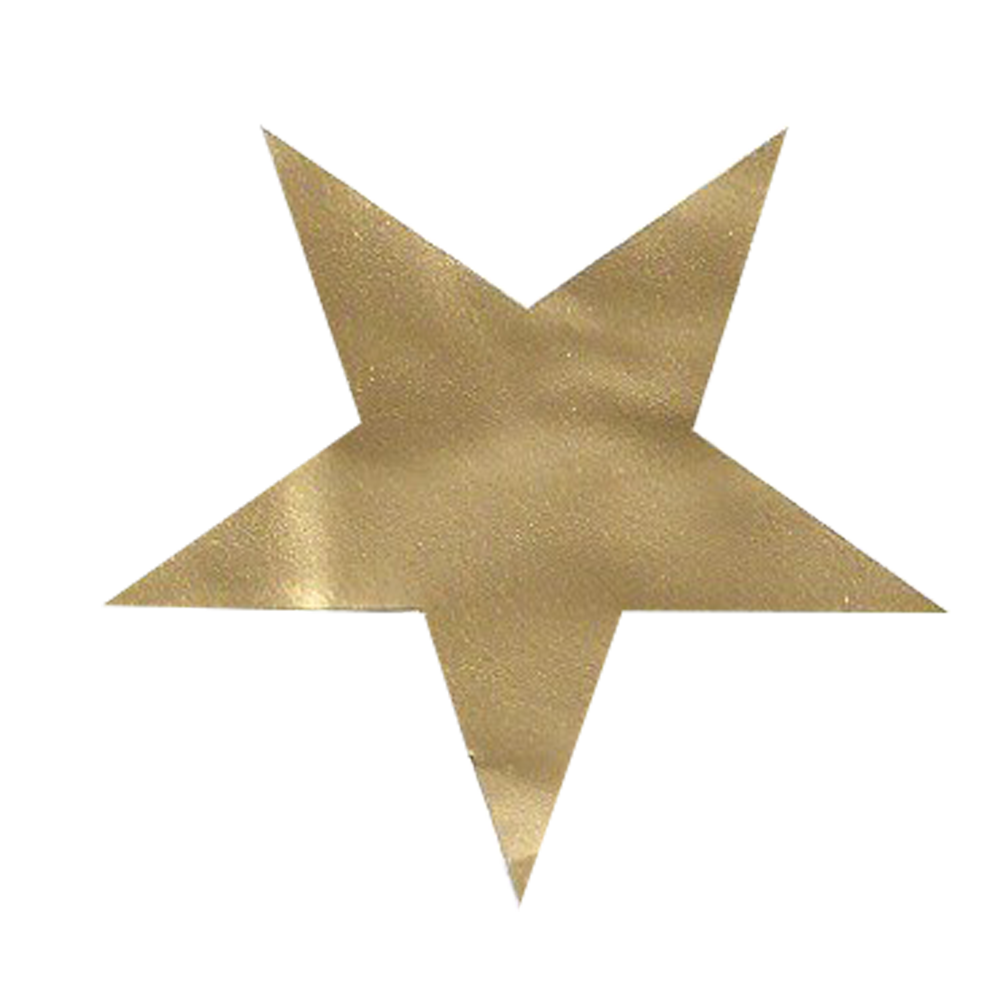
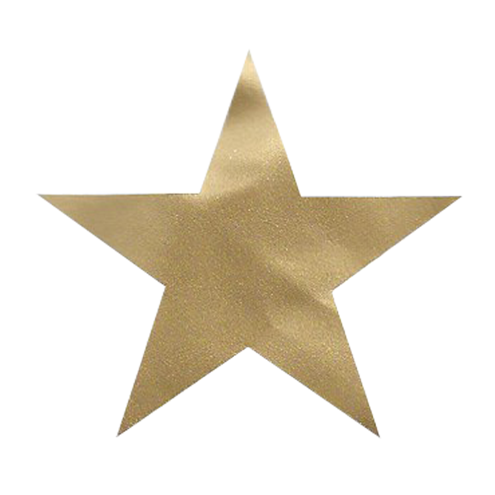

Vitamin I-V: Getting your daily dose of internal validation
How to add self-acceptance to your daily routine in 2021
I’ve never met a soul who couldn’t be won over by praise.
Buttering people up isn’t exactly the most sustainable way to begin any relationship, but the fact is,
giving compliments is the easiest way to boost someone’s self-esteem, even if you don’t know their first
name. Have you ever stood in line at Starbucks and been politely interrupted by the customer behind you
saying they love your outfit? You know they’re right—you spent an hour throwing tops on your bedroom floor
before finally arriving at this ensemble—but there’s something about getting approval from another person
that makes you feel validated.
Receiving external validation makes us feel like we’re on the right track; that our actions have meaning and
are worthy of praise. Getting a pat on the back from a coach after a game, an A on an assignment you spent
your whole weekend on, or the coveted “I’m so proud of you” from a parent is an instant serotonin boost. But
if you’re always seeking outside validation, you’re neglecting an untapped resource: validation that comes
from within.

Deana Slater, a registered social worker and therapist, explains that the ways in which our brains process
validation depends on our mindset. When we’re in a positive mindset, internal validation and approval may
come more easily. This might look like being proud of yourself for how hard you studied for a test, even if
you didn’t get a perfect score.
On the other hand, when we’re in a negative or judgemental mindset, coming up with internal validation is a
little trickier. The common response can be to then rely on others to help us feel better about ourselves,
but that’s a short term-solution to a much deeper problem.
“External validation feels good no matter how you talk to yourself,” Slater says. “But, when we rely on only
external validation, it can end up feeling a little empty or short-lived. Ever post a selfie and get a rush
from all those likes, then you go back to feeling the way you did before posting?” As soon as that rush of
dopamine and serotonin wears off, your brain is looking for another sense of accomplishment—and if you
haven’t established your own methods, it’s a slippery slope to self-deprecation.
Slater suggests that developing internal validation requires mostly self-reflection. “Self-awareness allows
individuals to know when, where and how they need to set boundaries. For example, when to say no to a
request or taking on another responsibility or when to distance or limit the time with a particular person.”
Practicing this self-awareness may take many forms, including journaling, meditation, or asking yourself
tough questions. “Relying on yourself to take care of yourself is the essence of internal validation,”
Slater explains.
If you find yourself relying on validation from friends, family or even strangers, Slater recommends taking
time to reflect on your own sense of accomplishment, and how to reward it. In this case, ask questions like:
“Can you trust yourself? Do you believe yourself when you praise yourself? Are you relying too much on
social media to feel good?”

For students, particularly those of us who look to grades as an indicator of success, Slater says it’s
important to clearly separate academic performance from self-worth. She recommends students check in with
themselves after getting marks back, whether they’re higher or lower than what they were hoping for, and
think about how the marks make them feel. “Where does the feeling exist in your body? Are these thoughts
coming from you, or a different person or stressor? Were there any environmental or contextual factors that
influenced the outcome?”
Finding, much less being satisfied by, internal validation may seem like a pipe dream. If you’re anything
like me, you spend more time beating yourself up for your missteps than you do appreciating your strides
forward. “It won’t be something that changes overnight,” Slater explains. “Developing internal validation
will take time and practice.” Learning to validate yourself may feel like a journey that’s a million miles
away, but we often need it most when it feels out of reach. Appreciate and acknowledge your daily wins, and
remember, no one is scrutinizing your actions more than you are. Why not turn that judgement into a bit of
love?